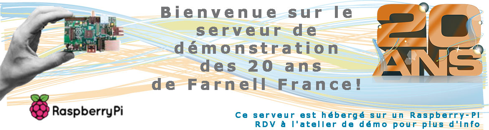
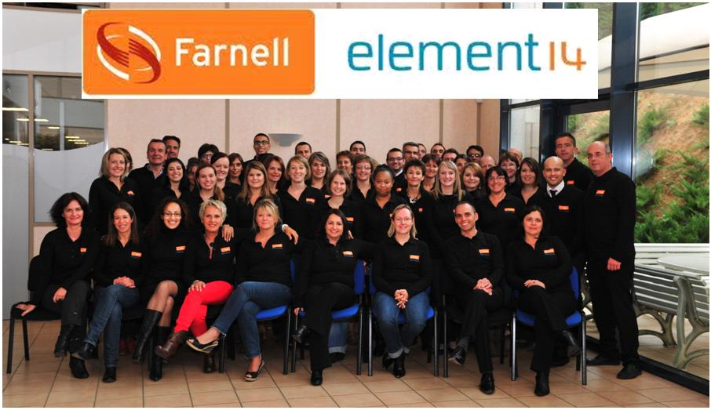

Aujourd'hui, plus de 50 fabricants réunis pour vous!
Bienvenue sur la page d'accueil de notre site dédié à la journée du 22 novembre 2012. Vous y retrouverez toutes
les infos, les programmes, le plan du salon,... Bonne visite
9h00 : Accueil des visiteurs
10h00 : Microchip - La connectivité USB, Ethernet, Wifi, ISM
11h00 : Avago Technologies - Solutions d'isolation optiques
11h30 : Avago Technologies - Solutions fibres optiques industrielles
11h30 -14H30 : Buffet plus d'info...
13h00 : CADSOFT Logiciel de conception CAO Cadsoft Eagle
14h00 : Adeunis RF - Les bases du Wireless, comment intégrer un module RF dans son Design
16h00 : Tirage au sort de la tombola plus d'info...
Polyjoule est une association étudiante de l'école Polytechnique de l'université de Nantes et du lycée de la Joliverie à Saint Sébastien sur Loire.
Elle travaille à la conception-réalisation d'un prototype automobile qui participe chaque année au Shell Eco Marathon.
Le Shell Eco Marathon est une compétition, mais surtout un programme éducatif mondial qui encourage l'innovation et favorise le développement de technologies de pointe pour une meilleure efficacité énergétique.
Le principe est simple : Concevoir et construire un véhicule capable de parcourir la plus grande distance possible avec une quantité minimum de carburant, tout en minimisant ses émissions de CO2. Le but de ce projet n'est pas d'établir de nouveaux records de vitesse, ni de terminer la course en tête, mais de consommer le moins de carburant possible sur une distance prédéfinie.
L'équipe Polyjoule utilise un véhicule électrique alimenté par de l'hydrogène à travers une Pile à Combustible (PAC). Son rendement est supérieur à celui des voitures courantes, de même que son autonomie. Il n'émet de plus aucun gaz à effet de serre.
Aujourd'hui, Polyjoule est champion dans sa catégorie hydrogène, 1er deux années consécutives (en 2010 et 2011) et deux fois second en 2008 et 2009.
Chiffre clé : 5136km / équivalent énergétique d'un litre d'essence. C'est le meilleur résultat de Polyjoule qui a été atteint en 2011.
Farnell element14 est partenaire de cette association qui oeuvre pour développer des technologies de pointe. Nous félicitons l'équipe Polyjoule pour tout le travail accompli depuis de nombreuses années et les résultats obtenus lors des précédentes compétitions. Nous leur souhaitons beaucoup d'autres succès dans le futur et nous vous invitons à les rencontrer dans le Hall d'accueil plus d'info...
Toute l'équipe de Farnell vous remercie d'être venu partager avec elle cette journée
